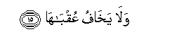

Sacred Texts Islam Index
Hypertext Qur'an Unicode Palmer Pickthall Yusuf Ali English Rodwell
Sūra XCI.: Shams, or The Sun. Index
Previous Next

The Holy Quran, tr. by Yusuf Ali, [1934], at sacred-texts.com
Sūra XCI.: Shams, or The Sun.
Section 1
1. By the Sun
And his (glorious) splendour;
2. By the Moon
As she follows him;
3. By the Day as it
Shows up (the Sun's) glory;
4. By the Night as it
Conceals it;
5. By the Firmament
And its (wonderful) structure;
6. By the Earth
And its (wide) expanse;
7. By the Soul,
And the proportion and order
Given to it;
8. Faalhamaha fujooraha wataqwaha
8. And its enlightenment
As to its wrong
And its right;—
9. Truly he succeeds
That purifies it,
10. And he fails
That corrupts it!
11. Kaththabat thamoodu bitaghwaha
11. The Thamūd (people)
Rejected (their prophet)
Through their inordinate
Wrong-doing.
12. Behold, the most wicked
Man among them was
Deputed (for impiety).
13. Faqala lahum rasoolu Allahi naqata Allahi wasuqyaha
13. But the apostle of God
Said to them: "It is
A She-camel of God!
And (bar her not
From) having her drink!"
14. Fakaththaboohu faAAaqarooha fadamdama AAalayhim rabbuhum bithanbihim fasawwaha
14. Then they rejected him
(As a false prophet),
And they hamstrung her.
So their Lord, on account
Of their crime, obliterated
Their traces and made them
Equal (in destruction,
High and low)!

15. And for Him
Is no fear
Of its consequences.